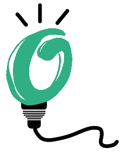

CONDICIONS D’ÚS DEL LLOC WEB
1. Informació general
Les condicions següents regulen la informació i l'ús permès del lloc web amb URL
https://www.consumestrategic.cat (des d’ara “el Web”), que l’Assemblea Nacional Catalana, d’ara endavant ANC, amb domicili social en carrer de
la Marina, 315, 08025, Barcelona, amb CIF G65581621, i inscrita en el Registre de les associacions i federacions de Catalunya, amb número d’inscripció
46548-J/1 d'acord amb la Llei 34/2002, d'11 de juliol, de Serveis de la Societat de la Informació i de Comerç Electrònic, posa a la disposició de socis,
simpatitzants i altres usuaris d'Internet.
El Web ha estat creat i dissenyat amb la finalitat de posar en contacte consumidors interessats en els serveis d’empreses comercials interessades en el
programa “Consum Estratègic”, (des d’ara “Programa”).
2. Condicions generals
Aquestes condicions generals tenen per objecte regular l'accés i la utilització del Web que l’ANC posa gratuïtament a la disposició
dels usuaris interessats en aquest projecte, excepte en el relatiu al cost de la connexió a través de la xarxa de telecomunicacions subministrada pel proveïdor
d'accés contractat per l’usuari d'Internet.
L'accés al Web i la navegació pel mateix implica l'acceptació, sense reserves, de totes les condicions incloses en aquest document.
3. Condicions d’ús
L'usuari d'Internet s'obliga a fer un ús correcte del Web de conformitat amb la legislació espanyola i europea vigent i amb les condicions incloses en aquest document. L'usuari d'Internet respondrà davant de l’ANC o d’altres tercers, per qualssevol dany i/o perjudici que pogués causar-se com a conseqüència de l'incompliment d'aquestes obligacions.
Queda expressament prohibit l'ús del Web amb finalitats lesives de béns o interessos de l’ANC o d’altres tercers o que de qualsevol altra forma sobrecarreguin, danyin o inutilitzin les xarxes, servidors i altres equips informàtics (maquinari) o productes i aplicacions informàtiques (programari) de l’ANC o d’altres tercers.
L’ANC es reserva la facultat d'efectuar, en qualsevol moment i sense necessitat de previ avís, modificacions i actualitzacions de la informació continguda al Web, de la configuració i presentació d’aquest i de les Condicions d'ús.
La prestació del servei del Web té una durada limitada al moment en el qual l'usuari d'Internet es trobi connectat al mateix o a algun dels serveis que a través d'aquest es facilitin. Per això es recomana que els usuaris d'Internet llegeixin atenta i detingudament aquestes Condicions d'ús en cadascuna de les ocasions en què es proposin entrar i fer ús del Web, ja que aquestes poden estar subjectes a modificacions.
L’ANC no garanteix la inexistència d'interrupcions o errors en l'accés al Web o al seu contingut, ni que aquest es trobi actualitzat. L’ANC durà a terme, sempre que no impliqui causes que ho facin impossible o de difícil execució, i tan aviat tingui notícia dels errors, desconnexions o falta d'actualització en els continguts, totes aquelles tasques necessàries per resoldre els errors, restablir la comunicació i actualitzar els continguts.
Tant l'accés al Web com l'ús no autoritzat que pugui efectuar-se de la informació continguda en el mateix és responsabilitat exclusiva de qui ho realitza.
L’ANC no respondrà de cap conseqüència, dany o perjudici que poguessin derivar-se d'aquest accés o ús. L’ANC no es fa responsable dels errors de seguretat, que es puguin produir ni dels danys que puguin produir-se en el sistema informàtic de l'usuari d'Internet (maquinari i programari), o als fitxers o documents emmagatzemats en el mateix, com a conseqüència: de la presència d'un programari maliciós en l'ordinador de l'usuari d'Internet que sigui utilitzat per a la connexió als continguts del Web, d'un mal funcionament del navegador o de l'ús de versions no actualitzades del navegador.
L’ANC no assumeix cap responsabilitat derivada dels continguts enllaçats des del Web, sempre que siguin aliens al mateix, ni garanteix l'absència de programari maliciós o altres elements en els mateixos que puguin produir alteracions en el sistema informàtic (maquinari i programari), en els documents o en els fitxers de l'usuari d'Internet, excloent qualsevol responsabilitat pels danys de qualsevol tipus causats per aquest motiu.
Si qualsevol usuari d'Internet considerés que el contingut o els serveis prestats pels llocs webs enllaçats són il·lícits o lesionen béns o drets del propi usuari d'Internet o d'un tercer susceptibles d'indemnització i que en particular, consisteixin en:
- activitats o continguts susceptibles de ser considerats delictius conforme la normativa penal,
- activitats o continguts que violin drets de propietat intel·lectual o industrial,
- activitats o continguts que posin en perill l'ordre públic, la recerca penal, la seguretat pública,
- activitats o continguts que posin en perill la protecció de la salut pública, el respecte a la dignitat de la persona i al principi de no discriminació i la protecció de la salut i la infància, haurà de notificar-ho, amb les observacions o il·lícits observats pel mateix.
4. Procediment en cas de realització d’activitats de caràcter il·lícit
Si un usuari d'Internet considera que existeixen fets o circumstàncies que revelin el caràcter il·lícit de la utilització de qualsevol contingut i/o de la realització de qualsevol activitat al Web, i en particular, de la violació de drets de propietat intel·lectual o industrial (patents, models i dibuixos industrials, marques i noms comercials, etc.) o altres drets, haurà d'enviar una notificació a l’ANC amb el següent contingut:
- dades de la persona o entitat que fa la reclamació: nom, adreça, telèfon i adreça de correu electrònic,
- descripció de la suposada activitat il·lícita duta a terme al Web i, en particular, quan es tracti d'una suposada violació de drets, la indicació precisa i concreta dels continguts protegits així com de la seva localització al Web,
- fets o circumstàncies que revelen el caràcter il·lícit d'aquesta activitat,
- en el supòsit de violació de drets, signatura manuscrita o equivalent, amb les dades personals del titular dels drets suposadament infringits o de la persona autoritzada per actuar en nom i per compte d'aquesta,
- declaració expressa, clara i sota la responsabilitat de la persona o entitat que fa la reclamació que la informació proporcionada en la notificació és exacta i del caràcter il·lícit de la utilització dels continguts o de la realització de les activitats descrites.
5. Dades de contacte de l’ANC
Es posa a la disposició dels usuaris d'Internet la següent informació per poder adreçar les seves peticions, qüestions i queixes:
Nom: Assemblea Nacional Catalana
Direcció postal: carrer de la Marina, 315, 08025 Barcelona
Correu electrònic: dades@consumestrategic.cat
Telèfon: +34 93 347 17 14
6. Dades facilitades per l’usuari d’Internet
Amb caràcter general l'accés al Web no exigeix la prèvia subscripció o registre dels usuaris d'Internet.
Tota la informació que faciliti l'usuari d’Internet mitjançant els formularis de dades del Web haurà de ser veraç i aquest ha de garantir l'autenticitat de totes aquelles dades que ha facilitat a l’ANC per aquest mitjà. D'igual forma, serà responsabilitat de l'usuari d'Internet mantenir tota la informació facilitada a l’ANC permanentment actualitzada de manera que respongui, en cada moment, a la situació real de l'usuari d'Internet. En tot cas l'usuari d'Internet serà l'únic responsable de la informació falsa o inexacta que realitzi i dels perjudicis que pugui causar a l’ANC o a tercers per la informació facilitada.
7. Enllaços
L'establiment d'un enllaç al Web, implica l'existència de relacions passades o presents entre l’ANC i el propietari del lloc web on s'estableixi, no implica per part de l’ANC ni l'acceptació ni l'aprovació dels seus continguts o serveis.
Queda expressament prohibit qualsevol altre aprofitament dels continguts del Web, a favor de tercers no autoritzats.
L’ANC no assumeix cap responsabilitat per la informació continguda en webs de tercers als quals es pugui accedir per enllaços o cercadors des del Web.
8. Propietat intel·lectual i industrial
Els drets de propietat intel·lectual del Web són titularitat de l’ANC a qui correspon l'exercici exclusiu dels drets d'explotació que inclouen la reproducció, la distribució, la comunicació pública i la transformació. A títol enunciatiu aquests drets inclouen el programari, el codi font, el disseny gràfic, l'estructura de navegació, les bases de dades, els textos, les fotografies i imatges, i en general tots els continguts i elements que conté. De la mateixa manera, les marques, noms comercials o signes distintius són titularitat exclusiva de l’ANC o si escau, d’altres tercers, tret que s'especifiqui el contrari.
L’ANC és titular dels drets de propietat intel·lectual que fan referència als seus productes i serveis, respecte a les cites de tercers.
Queda expressament prohibida la cessió dels drets de propietat intel·lectual sobre el Web. En concret, està prohibida la reproducció, transformació, distribució, comunicació pública, posar a disposició, extracció, reutilització, o la utilització de qualsevol naturalesa, per qualsevol mitjà o procediment, de qualsevol d'ells, excepte en els casos que estigui legalment permès, és a dir autoritzat pel titular dels corresponents drets.
La utilització no autoritzada de la informació continguda al Web, la seva revenda, així com la lesió dels drets de Propietat Intel·lectual de l’ANC donarà lloc a les responsabilitats legalment establertes.
Els usuaris d'Internet hauran de respectar tots els drets de propietat intel·lectual i industrial sobre el Web. No obstant això, els usuaris d'Internet podran visualitzar i obtenir una còpia privada temporal dels continguts per al seu ús exclusiu personal i privat en els seus sistemes informàtics (programari i maquinari), sempre que no sigui amb la finalitat de desenvolupar activitats de caràcter comercial o professional, així com la seva distribució, modificació, alteració o descompilació. La infracció de qualsevol dels drets citats pot constituir una vulneració de les presents condicions, així com un delicte contingut en el Codi Penal.
9. Protecció de dades personals
Tota la informació referent al tractament i la protecció de les dades personals, que ens són facilitades,
es troba en la nostra Política de Privacitat.
La pàgina principal del Web disposa d'un enllaç per poder accedir al contingut de la Política de Privacitat.
10. Cookies
Tota la informació sobre les cookies en general i sobre les quals s'utilitzen al Web en particular es troba en la nostra Política de cookies.
La pàgina principal del Web disposa d'un enllaç per poder accedir al contingut de la Política de cookies.
11. Jurisdicció
Les presents condicions s'interpretaran conforme a la legislació vigent espanyola i europea en la matèria, que s'aplicarà subsidiàriament en tot el que no s'hagi previst en les mateixes.
Per a la resolució de totes les controvèrsies o qüestions relacionades amb el Web o de les activitats en ell desenvolupades, serà aplicable la legislació espanyola i europea vigent, a la qual se sotmeten expressament l’ANC i els usuaris d'Internet, amb renúncia expressa a qualsevol altre fur, sent competents per a la resolució de tots els conflictes derivats o relacionats amb el seu ús els Jutjats i Tribunals de la ciutat de Barcelona.